前面我们已经把Mybatis、Spring和SpringMVC三个框架进行了学习，今天主要的内容就是把这三个框架整合在一起完成我们的业务功能开发。
SSM整合 流程分析 创建工程 1、创建Maven的Web工程
2、在pom.xml中导入SSM需要的依赖jar包：
① SpringMVC的核心依赖spring-webmvc
② Spring和jdbc、mybatis的依赖spring-test, spring-jdbc , mybatis-spring, mybatis
这里要注意Spring和jdk的版本兼容问题：当使用java8时，webmvc、test、jdbc保持版本一致且5.2.x以下的版本，mybatis-spring要保持2.x的版本。
③ 数据库mysql和数据库连接池Druid
④ Servlet（使用java8时要用4.0.1以下的版本）
⑤ 其他：jackson自动解析json格式数据，juint测试依赖
3、编写Web项目的入口配置类ServletInitConfig，实现AbstractAnnotationConfigDispatcherServletInitializer并重写以下方法：
① getRootConfigClasses() ：返回Spring的配置类->需要SpringConfig 配置类
② getServletConfigClasses() ：返回SpringMVC的配置类->需要SpringMvcConfig 配置类
③ getServletMappings() : 设置SpringMVC请求拦截路径规则
④ getServletFilters() （这个要记住函数名因为没有快捷override方式）：设置过滤器，解决POST请求中文乱码问题
SSM整合 1、SpringConfig
① 标识该类为配置类 @Configuration
② 扫描Service所在的包 @ComponentScan
③ 在Service层要管理事务 @EnableTransactionManagement
④ 读取外部的properties配置文件 @PropertySource
⑤ 整合Mybatis需要引入Mybatis相关配置类 @Import
1 2 3 4 5 6 7 @Configuration @ComponentScan({"com.Lijiacheng.service"}) @PropertySource("classpath:jdbc.properties") @Import({MybatisConfig.class, JdbcConfig.class}) @EnableTransactionManagement public class SpringConfig {}
1) 第三方数据源配置类 JdbcConfig：构建DataSource数据源DruidDataSouroce，需要注入数据库连接四要素，@Bean和@Value注解。构建平台事务管理器DataSourceTransactionManager，@Bean注解。
1 2 3 4 5 6 7 8 9 10 11 12 13 14 15 16 17 18 19 20 21 22 23 24 25 26 public class JdbcConfig { @Value("${jdbc.driver}") private String driver; @Value("${jdbc.url}") private String url; @Value("${jdbc.username}") private String username; @Value("${jdbc.password}") private String password; @Bean public DataSource dataSource () { DruidDataSource dataSource = new DruidDataSource (); dataSource.setDriverClassName(driver); dataSource.setUrl(url); dataSource.setUsername(username); dataSource.setPassword(password); return dataSource; } @Bean public PlatformTransactionManager platformTransactionManager (DataSource dataSource) { DataSourceTransactionManager ds = new DataSourceTransactionManager (); ds.setDataSource(dataSource); return ds; } }
2) Mybatis配置类 MybatisConfig：构建SqlSessionFactoryBean并设置别名扫描与数据源，@Bean注解。构建MapperScannerConfigurer并设置DAO层的包扫描，@Bean注解。
1 2 3 4 5 6 7 8 9 10 11 12 13 14 15 public class MybatisConfig { @Bean public SqlSessionFactoryBean sqlSessionFactoryBean (DataSource dataSource) { SqlSessionFactoryBean sqlSessionFactoryBean = new SqlSessionFactoryBean (); sqlSessionFactoryBean.setDataSource(dataSource); sqlSessionFactoryBean.setTypeAliasesPackage("com.Lijiacheng.domain" ); return sqlSessionFactoryBean; } @Bean public MapperScannerConfigurer mapperScannerConfigurer () { MapperScannerConfigurer msc = new MapperScannerConfigurer (); msc.setBasePackage("com.Lijiacheng.dao" ); return msc; } }
2、SpringMvcConfig
① 标识该类为配置类 @Configuration
② 扫描Controller所在的包 @ComponentScan
③ 开启SpringMVC注解支持 @EnableWebMvc
1 2 3 4 5 @Configuration @ComponentScan("com.Lijiacheng.controller") @EnableWebMvc public class SpringMvcConfig {}
功能模块 1、创建数据库表
2、根据数据库表创建对应的模型类
3、通过Dao层完成数据库表的增删改查（接口+自动代理）
4、编写Service层（Service接口+实现类）：@Service, @Transactional；整合Junit对业务层进行单元测试@RunWith, @ContextConfiguration, @Test
5、编写Controller层：@RestController；接收请求(@RequestMapping, @GetMapping, @PostMapping, @PutMapping, @DeleteMapping)；接收数据(@RequestParam, @PathVariable, @RequestBody)；转发业务层@Autowired
整合配置 步骤1：创建项目包结构
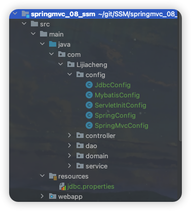
步骤2：创建SpringConfig配置
1 2 3 4 5 6 7 8 @Configuration @ComponentScan({"com.Lijiacheng.service"}) @PropertySource("classpath:jdbc.properties") @Import({MybatisConfig.class, JdbcConfig.class}) @EnableTransactionManagement public class SpringConfig {}
步骤3：创建JdbcConfig配置类
1 2 3 4 5 6 7 8 9 10 11 12 13 14 15 16 17 18 19 20 21 22 23 24 25 26 public class JdbcConfig { @Value("${jdbc.driver}") private String driver; @Value("${jdbc.url}") private String url; @Value("${jdbc.username}") private String username; @Value("${jdbc.password}") private String password; @Bean public DataSource dataSource () { DruidDataSource dataSource = new DruidDataSource (); dataSource.setDriverClassName(driver); dataSource.setUrl(url); dataSource.setUsername(username); dataSource.setPassword(password); return dataSource; } @Bean public PlatformTransactionManager platformTransactionManager (DataSource dataSource) { DataSourceTransactionManager ds = new DataSourceTransactionManager (); ds.setDataSource(dataSource); return ds; } }
步骤4：创建MybatisConfig配置类
1 2 3 4 5 6 7 8 9 10 11 12 13 14 15 public class MybatisConfig { @Bean public SqlSessionFactoryBean sqlSessionFactoryBean (DataSource dataSource) { SqlSessionFactoryBean sqlSessionFactoryBean = new SqlSessionFactoryBean (); sqlSessionFactoryBean.setDataSource(dataSource); sqlSessionFactoryBean.setTypeAliasesPackage("com.Lijiacheng.domain" ); return sqlSessionFactoryBean; } @Bean public MapperScannerConfigurer mapperScannerConfigurer () { MapperScannerConfigurer msc = new MapperScannerConfigurer (); msc.setBasePackage("com.Lijiacheng.dao" ); return msc; } }
步骤5：创建jdbc.properties
在resources下提供jdbc.properties，设置数据库连接四要素
1 2 3 4 jdbc.driver =com.mysql.cj.jdbc.Driver jdbc.url =jdbc:mysql://localhost:3306/ssm_db?useSSL=false jdbc.username =root jdbc.password =xxxxxxx
步骤6：创建SpringMvcConfig配置类
1 2 3 4 5 @Configuration @ComponentScan("com.Lijiacheng.controller") @EnableWebMvc public class SpringMvcConfig {}
步骤7：创建Web项目入口ServletInitConfig配置类
1 2 3 4 5 6 7 8 9 10 11 12 13 14 15 16 public class ServletInitConfig extends AbstractAnnotationConfigDispatcherServletInitializer { protected Class<?>[] getRootConfigClasses() { return new Class []{SpringConfig.class}; } protected Class<?>[] getServletConfigClasses() { return new Class []{SpringMvcConfig.class}; } protected String[] getServletMappings() { return new String []{"/" }; } protected Filter[] getServletFilters(){ CharacterEncodingFilter filter = new CharacterEncodingFilter (); filter.setEncoding("utf-8" ); return new Filter []{filter}; } }
总结
Web项目入口配置类ServletInitConfig → SpringConfig配置类：扫描Service层、导入外部properties、导入JdbcConfig、MybatisConfig等配置类
→ SpringMvcConfig配置类：扫描Controller层
功能模块开发 步骤1：编写pojo模型类
步骤2：编写Dao接口
1 2 3 4 5 6 7 8 9 10 11 12 13 14 15 16 public interface BookDao { @Insert("insert into tbl_book values(null, #{type}, #{name}, #{description})") public void save (Book book) ; @Delete("delete from tbl_book where id = #{id}") public void delete (Integer id) ; @Update("update tbl_book set type = #{type}, name = #{name}, description = #{description} where id = #{id}") public void update (Book book) ; @Select("select * from tbl_book where id = #{id}") public Book getById (Integer id) ; @Select("select * from tbl_book") public List<Book> getAll () ; }
步骤3：编写Service接口和实现类
1 2 3 4 5 6 7 8 9 10 11 12 13 14 15 16 17 18 19 20 21 22 23 24 25 26 27 28 29 30 31 32 33 34 35 36 @Transactional public interface BookService { public boolean save (Book book) ; public boolean delete (Integer id) ; public boolean update (Book book) ; public Book getById (Integer id) ; public List<Book> getAll () ; } @Service public class BookServiceImpl implements BookService { @Autowired private BookDao bookDao; public boolean save (Book book) { bookDao.save(book); return true ; } public boolean delete (Integer id) { bookDao.delete(id); return true ; } public boolean update (Book book) { bookDao.update(book); return true ; } public Book getById (Integer id) { return bookDao.getById(id); } public List<Book> getAll () { return bookDao.getAll(); } }
bookDao在Service中注入的会提示一个红线提示：这是因为BookDao是一个接口，没有实现类，接口是不能创建对象的，所以最终注入的应该是代理对象。而代理对象是由Spring的IOC容器来创建管理的，IOC容器又是在Web服务器启动的时候才会创建，没有找到适合的类注入所以会提示错误提示。
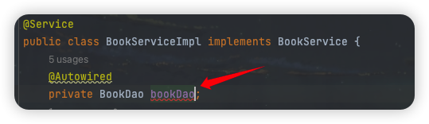
不去理会当然可以正常运行程序，但作为追求完美的强迫症程序员，可以设置IDEA的错误提示级别：
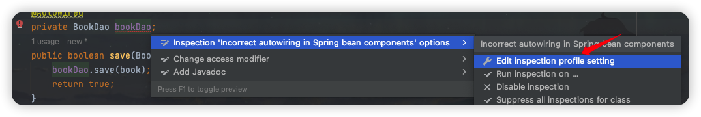
在这里取消勾选，或者将其降级为warning级别都可以：
步骤4：编写Controller类
1 2 3 4 5 6 7 8 9 10 11 12 13 14 15 16 17 18 19 20 21 22 23 24 25 26 27 28 29 30 31 @RestController @RequestMapping("/books") public class BookController { @Autowired private BookService bookService; @PostMapping public boolean save (@RequestBody Book book) { return bookService.save(book); } @DeleteMapping("/{id}") public boolean delete (@PathVariable Integer id) { return bookService.delete(id); } @PutMapping public boolean update (@RequestBody Book book) { return bookService.update(book); } @GetMapping("/{id}") public Book getById (@PathVariable Integer id) { return bookService.getById(id); } @GetMapping public List<Book> getAll () { return bookService.getAll(); } }
单元测试 对于图书模块的增删改查就已经完成了编写，接下来我们就先把业务层Service的代码使用Spring整合Junit进行单元测试：
步骤1：新建测试类
步骤2：注入Service类
步骤3：编写测试方法
1 2 3 4 5 6 7 8 9 10 11 12 13 14 15 16 17 18 @RunWith(SpringJUnit4ClassRunner.class) @ContextConfiguration(classes = SpringConfig.class) public class BookServiceTest { @Autowired private BookService bookService; @Test public void testGetById () { Book book = bookService.getById(1 ); System.out.println(book); } @Test public void testGetAll () { List<Book> books = bookService.getAll(); System.out.println(books); } }
Service层的代码测试成功，结果就不在这放嘞，接着往下看。
PostMan测试 新增
前端发送新增请求：
后台数据库：
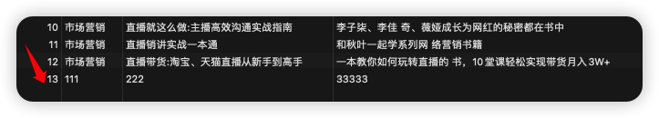
修改
前端发送修改请求：
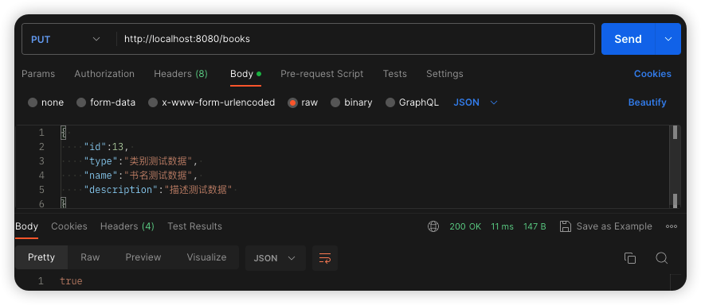
后台数据库：
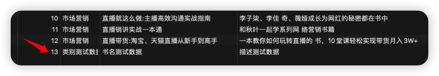
删除
前端发送删除请求：
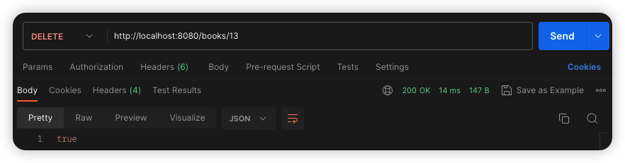
后台数据库：
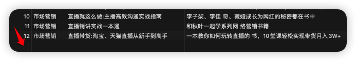
查询
前端发送查询请求：
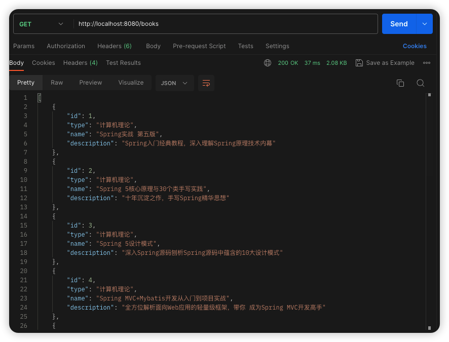
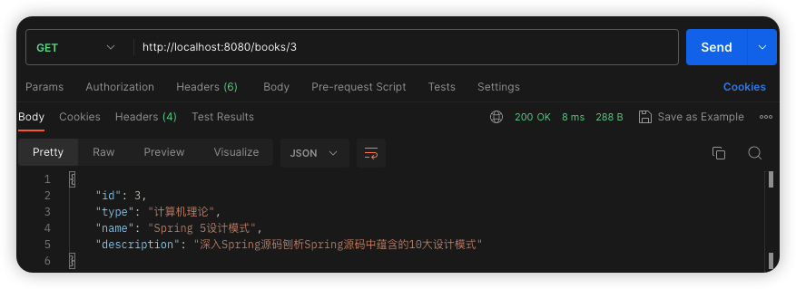
统一结果封装 表现层与前端数据传输协议定义 在Controller层增删改返回给前端的是boolean类型数据、在Controller层查询单个返回给前端的是对象、在Controller层查询所有返回给前端的是集合对象……对于前端来说，如果后台能够返回一个统一的数据结果，前端在解析的时候就可以按照一种方式进行解析，开发就会变得更加简单。
所以我们就想能不能将返回结果的数据进行统一，具体如何来做，大体的思路为:
为了封装返回的结果数据：创建结果模型类，封装数据到data属性中
为了封装返回的数据是何种操作及是否操作成功：封装操作结果到code属性中
操作失败后为了封装返回的错误信息：封装特殊消息到message(msg)属性中
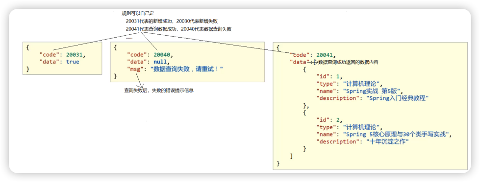
解决方案是我们可以设置统一数据返回结果类，Result类名及类中的字段并不是固定的，可以根据需要自行增减提供若干个构造方法，方便操作：
表现层与前端数据传输协议实现 步骤1：创建Result类
1 2 3 4 5 6 7 8 9 10 11 12 13 14 15 16 17 public class Result { private Integer code; private Object data; private String msg; public Result (Integer code, Object data) { this .code = code; this .data = data; } public Result (Integer code, Object data, String msg) { this .code = code; this .data = data; this .msg = msg; } }
步骤2：定义返回码Code类
1 2 3 4 5 6 7 8 9 10 public class Code { public static final Integer SAVE_OK = 20011 ; public static final Integer DELETE_OK = 20021 ; public static final Integer UPDATE_OK = 20031 ; public static final Integer GET_OK = 20041 ; public static final Integer SAVE_ERR = 20010 ; public static final Integer DELETE_ERR = 20020 ; public static final Integer UPDATE_ERR = 20030 ; public static final Integer GET_ERR = 20040 ; }
步骤3：修改Controller类的返回值为Result对象
1 2 3 4 5 6 7 8 9 10 11 12 13 14 15 16 17 18 19 20 21 22 23 24 25 26 27 28 29 @PostMapping public Result save (@RequestBody Book book) { boolean flag = bookService.save(book); return new Result (flag ? Code.SAVE_OK : Code.SAVE_ERR, flag); } @DeleteMapping("/{id}") public Result delete (@PathVariable Integer id) { boolean flag = bookService.delete(id); return new Result (flag ? Code.DELETE_OK : Code.DELETE_ERR, flag); } @PutMapping public Result update (@RequestBody Book book) { boolean flag = bookService.update(book); return new Result (flag ? Code.UPDATE_OK : Code.UPDATE_ERR, flag); } @GetMapping("/{id}") public Result getById (@PathVariable Integer id) { Book book = bookService.getById(id); Integer code = book != null ? Code.GET_OK : Code.GET_ERR; String msg = book != null ? "" : "未查询到信息，请重试" ; return new Result (code, book, msg); } @GetMapping public Result getAll () { List<Book> books = bookService.getAll(); Integer code = books != null ? Code.GET_OK : Code.GET_ERR; String msg = books != null ? "" : "未查询到信息，请重试" ; return new Result (code, books, msg); }
至此，我们的返回结果就已经能以一种统一的格式返回给前端。前端根据返回的结果，先从中获取code，根据code判断，如果成功则取data属性的值；如果失败则取msg中的值做提示（随便举一个根据id查询的例子）：
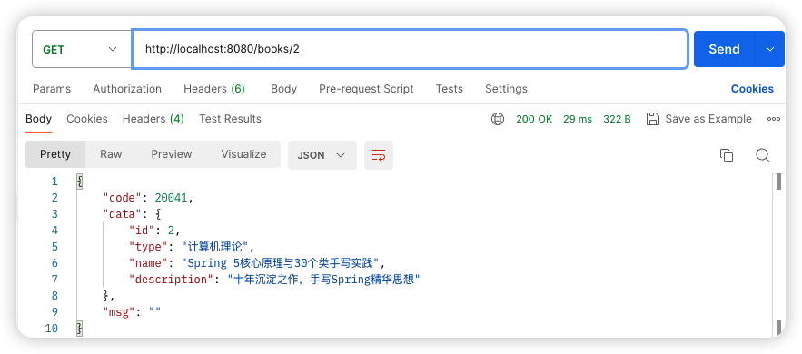
统一异常处理 异常处理概述 当我们在表现Controller层的getById方法中手动添加一个异常，可以发现在前端发送请求时出现接收到的信息和之前约定的数据格式不一致的问题：
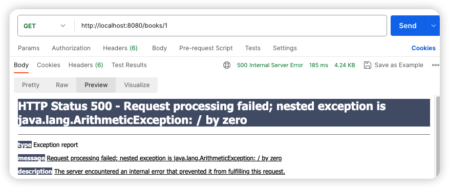
我们在开发的过程中在任何一个位置都可能会出现异常。
框架内部抛出的异常：因使用不合规导致
数据层抛出的异常：因外部服务器故障导致（例如：服务器访问超时）
业务层抛出的异常：因业务逻辑书写错误导致（例如：遍历业务书写操作，导致索引异常等）
表现层抛出的异常：因数据收集、校验等规则导致（例如：不匹配的数据类型间导致异常）
工具类抛出的异常：因工具类书写不严谨不够健壮导致（例如：必要释放的连接长期未释放等）
各个层级均出现异常，异常处理代码书写在哪一层？所有的异常均抛出到表现层进行处理
异常的种类很多，表现层如何将所有的异常都处理到呢？异常分类
表现层处理异常，每个方法中单独书写，代码书写量巨大且意义不强，如何解决？AOP
针对上述的问题，SpringMVC已经为我们提供了一套异常处理器 的解决方案，集中的统一的处理项目中出现的异常。
1 2 3 4 5 6 7 @RestControllerAdvice public class ProjectExceptionAdvice { @ExceptionHandler(Exception.class) public Result doException (Exception ex) { return new Result (666 , null ); } }
异常处理器的使用 步骤1：创建异常处理器类
要确保SpringMvcConfig能够扫描到异常处理器类
1 2 3 4 5 6 7 8 9 @RestControllerAdvice public class ProjectExceptionAdvice { @ExceptionHandler(Exception.class) public void doException (Exception ex) { System.out.println("嘿嘿，异常你往哪里跑！" ); } }
步骤2：让程序抛出异常
步骤3：运行程序测试（异常已经被拦截并执行了doException方法）
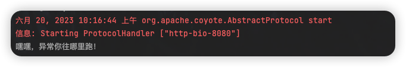
步骤4：异常处理器类返回结果给前端
1 2 3 4 5 @ExceptionHandler(Exception.class) public Result doException (Exception ex) { System.out.println("嘿嘿，异常你往哪里跑！" ); return new Result (666 , null , "呵呵，异常你往哪里跑！" ); }
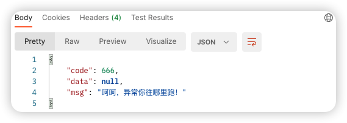
就算后台执行的过程中抛出异常，最终也能按照我们和前端约定好的数据格式返回给前端。
@RestControllerAdvice注解：此注解自带@ResponseBody注解与@Component注解，REST风格的(异常处理)控制器类。
@ExceptionHandler注解：专用于异常处理的控制器方法 上方，出现异常后终止原始控制器执行，并转入当前方法执行。
项目异常处理方案 异常分类 因为异常的种类有很多，如果每一个异常都对应一个@ExceptionHandler，那得写多少个方法来处理各自的异常，所以我们在处理异常之前，需要对异常进行一个分类。
项目运行过程中可预计但无法避免的异常，比如数据库或服务器宕机。
编程人员未预期到的异常，如:用到的文件不存在。
将异常分类以后，针对不同类型的异常，要提供具体的解决方案。
异常解决方案
发送对应消息传递给用户，提醒规范操作（大家常见的就是提示用户名已存在或密码格式不正确等）
发送固定消息传递给用户，安抚用户（系统繁忙，请稍后再试）
发送特定消息给运维人员，提醒维护（可以发送短信、邮箱或者是公司内部通信软件）
记录日志（发消息和记录日志对用户来说是不可见的，属于后台程序）
发送固定消息传递给用户，安抚用户
发送特定消息给编程人员，提醒维护（纳入预期范围内）
记录日志（一般是程序没有考虑全，比如未做非空校验等）
异常解决方案的具体实现
思路：
先通过自定义异常，完成BusinessException和SystemException的定义
将其他异常包装成自定义异常类型
在异常处理器类中对不同的异常进行处理
步骤1：自定义异常类（新建一个exception包目录）
1 2 3 4 5 6 7 8 9 10 11 12 13 14 15 16 17 18 19 20 21 22 public class SystemException extends RuntimeException { private Integer code; public SystemException () { } public SystemException (Integer code, String message) { super (message); this .code = code; } public SystemException (Integer code, String message, Throwable cause) { super (message, cause); this .code = code; } public SystemException (Integer code) { this .code = code; } public Integer getCode () { return code; } public void setCode (Integer code) { this .code = code; } }
让自定义异常类继承RuntimeException的好处是，后期在抛出这两个异常的时候，就不用try…catch…或throws了。
自定义异常类中添加code属性的原因是为了更好的区分异常是来自哪个业务的。
步骤1.5：在Code类中再新增需要的属性
步骤2：将其他异常包装成自定义异常
具体的包装方式有两种：
方式一：try{…}catch(){…}在catch中重新throw我们自定义异常即可；
方式二：直接throw自定义异常即可；
1 2 3 4 5 6 7 8 9 10 11 12 13 14 15 16 17 18 @GetMapping("/{id}") public Result getById (@PathVariable Integer id) { if (id == 1 ){ throw new BusinessException (Code.BUSINESS_ERR, "请不要用你的技术挑战我的饭碗！" ); } try { int i = 1 / 0 ; }catch (Exception e){ throw new SystemException (Code.SYSTEM_TIMEOUT_ERR,"服务器访问超时，请重试！" , e); } Book book = bookService.getById(id); Integer code = book != null ? Code.GET_OK : Code.GET_ERR; String msg = book != null ? "" : "未查询到信息，请重试" ; return new Result (code, book, msg); }
步骤3：处理器类中处理自定义异常
1 2 3 4 5 6 7 8 9 10 11 12 13 14 15 16 17 18 19 20 21 22 23 24 25 26 @RestControllerAdvice public class ProjectExceptionAdvice { @ExceptionHandler(SystemException.class) public Result doSystemException (SystemException ex) { return new Result (ex.getCode(), null , ex.getMessage()); } @ExceptionHandler(BusinessException.class) public Result doBusinessException (BusinessException ex) { return new Result (ex.getCode(), null , ex.getMessage()); } @ExceptionHandler(Exception.class) public Result doException (Exception ex) { return new Result (Code.SYSTEM_UNKNOWN_ERR, null , "系统繁忙，请稍后再试！" ); } }
步骤4：进行异常测试
在根据id查询中，如果查询请求id为1报错BusinessException错，如果id不为1则报SystemException错。
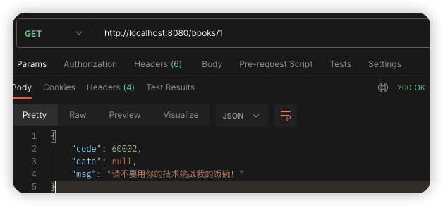
对于异常我们就已经处理完成了。不管后台哪一层抛出异常，都会以我们与前端约定好的方式进行返回，前端只需要把信息获取到，根据返回的正确与否来展示不同的内容即可。
小结
项目中的异常处理方式为：
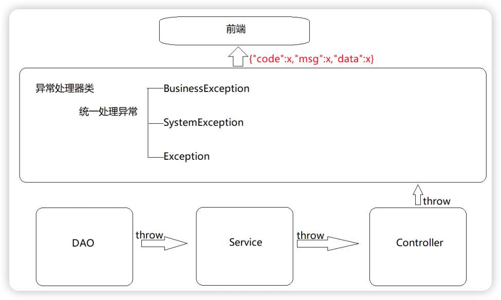
前后台协议联调 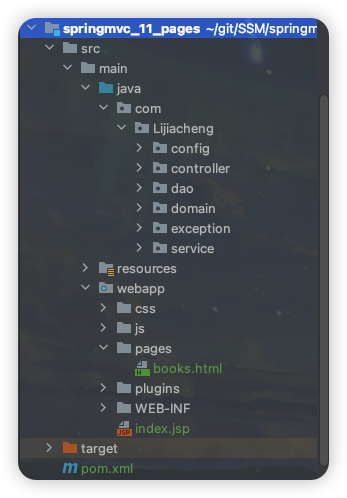
因为添加了静态资源，SpringMVC会拦截，所以需要将静态资源进行放行：
复习一下如何将静态资源放行？
1）新建SpringMvcSupport配置类，继承WebMvcConfigurationSupport，重写addResourceHandlers方法。
2）在SpringMvcConfig中扫描SpringMvcSupport
列表功能
页面加载完后发送异步请求到后台获取列表数据进行展示。
1 2 3 4 5 6 7 //列表 getAll() { // 发送ajax请求 axios.get("/books").then((res)=>{ this.dataList = res.data.data; }); },
添加功能
“新建”按钮上绑定了@click=”handleCreate()”方法；在method中找到handleCreate方法，方法中打开”新增“面板。
”确定”按钮上绑定了@click=”handleAdd()”方法；在method中找到handleAdd方法，在方法中发送请求和数据，响应成功后将新增面板关闭并重新查询数据。
1 2 3 4 5 6 7 8 9 10 11 12 13 //弹出添加窗口 handleCreate() { this.dialogFormVisible = true; }, //添加 handleAdd () { //发送ajax请求 // this.formData是表单中的数据，最后是一个json数据 axios.post("/books", this.formData).then((res)=>{ this.dialogFormVisible = false; // 关闭弹窗 this.getAll(); // 刷新显示全部 }) },
但是我们发现在新增成功后，再次点击新增按钮会发现之前的数据还存在，这个时候就需要在新增的时候将表单内容清空。
1 2 3 4 5 6 7 8 9 //弹出添加窗口 handleCreate() { this.dialogFormVisible = true; this.resetForm(); }, //重置表单 resetForm() { this.formData = {}; },
添加功能状态处理
新增成功是关闭面板，重新查询数据，但是我们还需要考虑新增失败的异常情况：即在handlerAdd方法中根据后台返回的数据来进行不同的处理。
1 2 3 4 5 6 7 8 9 10 11 12 13 14 15 16 17 18 19 20 21 //添加 handleAdd () { //发送ajax请求 axios.post("/books", this.formData).then((res)=>{ // 如果请求成功，则关闭弹层，显示数据 if(res.data.code == 20011){ this.dialogFormVisible = false; // 关闭弹窗 this.$message.success("添加成功！"); } // 如果请求失败，则弹窗提醒 else if(res.data.code == 20010){ this.$message.error("添加失败！"); } // 其他的未知异常 else{ this.$message.error(res.data.msg); } }).finally(()=>{ this.getAll(); }) },
修改功能
“编辑”按钮绑定了@click=”handleUpdate(scope.row)”；在method的handleUpdate方法中发送异步请求根据ID查询图书信息。根据后台返回的结果，判断是否查询成功：如果查询成功打开修改面板回显数据，如果失败提示错误信息。
修改完成后“确定”按钮绑定了@click=”handleEdit()”，在method的handleEdit方法中发送异步请求提交修改数据。
1 2 3 4 5 6 7 8 9 10 11 12 13 14 15 16 17 18 19 20 21 22 23 24 25 26 27 28 //弹出编辑窗口 handleUpdate(row) { axios.get("/books/" + row.id).then((res)=>{ // 展示弹层，加载数据 if(res.data.code == 20041){ this.formData = res.data.data; this.dialogFormVisible4Edit = true; } else{ this.$message.error(res.data.msg); } }) }, //编辑 handleEdit() { axios.put("/books", this.formData).then((res)=>{ // 如果操作成功，关闭弹层，显示数据 if(res.data.code == 20031){ this.dialogFormVisible4Edit = false; this.$message.error("修改成功！"); } else if(res.data.code == 20030){ this.$message.error("修改失败！"); } else{ this.$message.error(res.data.msg); } }).finally(()=>{ this.getAll(); }) },
删除功能
”删除“按钮上绑定了@click=”handleDelete(scope.row)”，method的handleDelete方法弹出提示框。
1 2 3 4 5 6 7 8 9 10 11 12 13 14 15 16 17 18 19 20 // 删除 handleDelete(row) { this.$confirm("此操作永久删除当前数据，是否继续？","提示",{ type:'info' }).then(()=>{ //2.做删除业务 axios.delete("/books/"+row.id).then((res)=>{ if(res.data.code == 20021){ this.$message.success("删除成功"); }else{ this.$message.error("删除失败"); } }).finally(()=>{ this.getAll(); }); }).catch(()=>{ //3.取消删除 this.$message.info("取消删除操作"); }); }
拦截器 拦截器概念 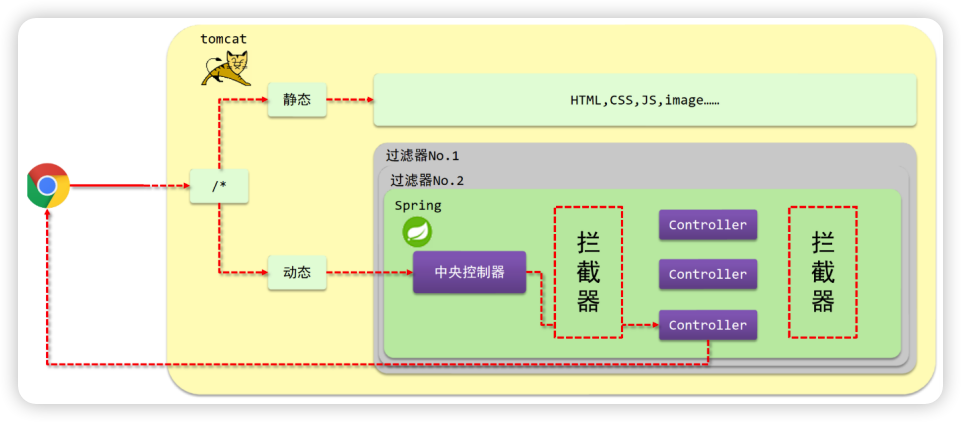
(1) 浏览器发送一个请求会先到Tomcat的web服务器；
(2) Tomcat服务器接收到请求以后，会去判断请求的是静态资源还是动态资源；
(3) 如果是静态资源，会直接到Tomcat的项目部署目录下去直接访问；
(4) 如果是动态资源，就需要交给项目的后台代码进行处理；
(5) 在找到具体的方法之前，我们可以去配置过滤器(可以配置多个)，按照顺序进行执行；
(6) 然后进入到到中央处理器(SpringMVC中的内容)，SpringMVC会根据配置的规则进行拦截；
(7) 如果满足规则，则进行处理，找到其对应的controller类中的方法进行执行，完成后返回结果；
(8) 如果不满足规则，则不进行处理；
(9) 这个时候，如果我们需要在每个Controller方法执行的前后添加业务，具体该如何来实现？——拦截器
拦截器 （Interceptor）是一种动态拦截方法调用的机制，在SpringMVC中动态拦截控制器方法的执行：在指定的方法调用前后执行预先设定的代码来阻止原始方法的执行。
SpringMVC的拦截器和Servlet的过滤器的区别：
归属不同：Filter属于Servlet技术，Interceptor属于SpringMVC技术；
拦截内容不同：Filter对所有访问进行增强，Interceptor仅针对SpringMVC的访问进行增强。
拦截器入门案例 环境准备
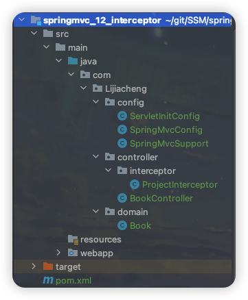
拦截器开发 步骤1：在controller表现层创建拦截器类
让类实现HandlerInterceptor接口，重写接口中的三个方法。同时要注意Interceptor类必须受Spring容器控制和被SpringMVC扫描到。
1 2 3 4 5 6 7 8 9 10 11 12 13 14 15 16 @Component public class ProjectInterceptor implements HandlerInterceptor { public boolean preHandle (HttpServletRequest request, HttpServletResponse response, Object handler) throws Exception { System.out.println("preHandle..." ); return true ; } public void postHandle (HttpServletRequest request, HttpServletResponse response, Object handler, ModelAndView modelAndView) throws Exception { System.out.println("postHandle..." ); } public void afterCompletion (HttpServletRequest request, HttpServletResponse response, Object handler, Exception ex) throws Exception { System.out.println("afterCompletion..." ); } }
步骤2：配置拦截器类
1 2 3 4 5 6 7 8 9 10 11 12 13 14 15 16 @Configuration public class SpringMvcSupport extends WebMvcConfigurationSupport { @Autowired private ProjectInterceptor projectInterceptor; @Override protected void addResourceHandlers (ResourceHandlerRegistry registry) { registry.addResourceHandler("/pages/**" ).addResourceLocations("/pages/" ); } @Override protected void addInterceptors (InterceptorRegistry registry) { registry.addInterceptor(projectInterceptor).addPathPatterns("/books" , "/books/*" ); } }
自动装配前面创建的拦截器类，在Support配置中配置拦截的路径。
步骤3：SpringMvcConfig添加SpringMvcSupport包(config包下)扫描
当拦截器拦截的路径是(“/books”)时，则发送http://localhost/books/100会发现拦截器没有被执行， 因为没有匹配上，想要拦截则要设置”/books/*”。
当有拦截器后，请求会先进入preHandle方法，如果方法返回true，则放行继续执行后面的handle（controller的方法）和后面的方法；如果返回false，则直接跳过后面方法的执行。
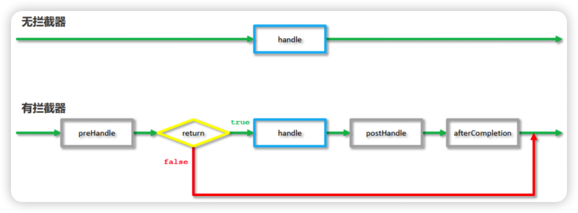
（可选）步骤4：简化SpringMvcSupport的编写
在SpringMvcConfig中实现WebMvcConfigurer接口后面就不用写SpringMvcSupport配置类了，但具有一定的侵入性。
拦截器参数 前置处理方法
request：请求对象
response：响应对象
handler：被调用的处理器对象，本质上是一个方法对象，对反射中的Method对象进行了再包装
使用request对象可以获取请求数据中的内容，如获取请求头的Content-Type（要使用post请求 ）：
1 2 3 4 5 public boolean preHandle (HttpServletRequest request, HttpServletResponse response, Object handler) throws Exception { String contentType = request.getHeader("Content-Type" ); System.out.println("preHandle..." + contentType); return true ; }
使用handler参数，可以获取方法的相关信息：
1 2 3 4 5 6 7 public boolean preHandle (HttpServletRequest request, HttpServletResponse response, Object handler) throws Exception { String contentType = request.getHeader("Content-Type" ); HandlerMethod hm = (HandlerMethod) handler; String methodName = hm.getMethod().getName(); System.out.println("preHandle..." + contentType + ", " + methodName); return true ; }
后置处理方法
原始方法运行后运行，如果原始方法被拦截，则不执行。
modelAndView：如果处理器执行完成具有返回结果，可以读取到对应数据与页面信息，并进行调整。因为现在都是返回json数据，所以该参数的使用率不高。
完成处理方法
拦截器最后执行的方法，无论原始方法是否执行。
ex：如果处理器执行过程中出现异常对象，可以针对异常情况进行单独处理。因为现在已经有全局异常处理器类，所以该参数的使用率也不高。
总结
这三个方法中，最常用的是preHandle ，在这个方法中可以通过返回值来决定是否要进行放行，我们可以把业务逻辑放在该方法中，如果满足业务则返回true放行，不满足则返回false拦截。
拦截器链配置 步骤1：创建多个拦截器类ProjectInterceptor1、ProjectInterceptor2…
步骤2：配置拦截器链
拦截器执行的顺序是和配置顺序有关：先进后出（preHandle是与配置顺序相同，必定运行的）。
执行过程：当拦截器中出现对原始处理器的拦截，后面的拦截器均终止运行；当拦截器运行中断，仅运行配置在前面的拦截器的afterCompletion操作，见下图所示：
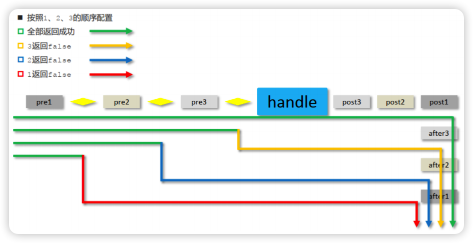